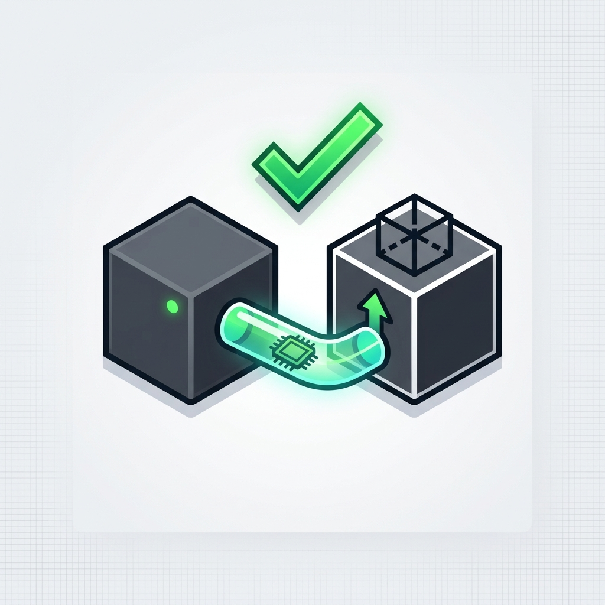

TLSCreateCACert
Pasos para crear un archivo Certificado de Autoridad TLS para libvirt
El primer paso en la configuración de libvirt para su uso con TLS, es crear el Certificado de Autoridad, usado para firmar todos los demás certificados que iremos creando.
Sigue estas instrucciones para crear el certificado Certificado de Autoridad, después, continúa navegando a través de las páginas para completar la configuración.
Lista completa de pasos
ESTO ES EL ÍNDICE GENERAL // FERENCIAS RELATIVAS:
Lista completa del proceso
Crear certificado de Autiridad de certificados(CA).
Crear certificado de servidor.
Crear certificado de cliente.
Configuración de demonio libvirt.
Otras referencias.
-x3 [text-j1]: http://estoEsElenlace
Plantilla para el Certificado de Autoridad, usando un editor de textos
Esto es un archivo en texto plano, con los siguientes campos:
cn= Nombre de tu organizacióncacert_signing_key
El valor Nombre de tu organización, debería ser ajustado para que coincida con el tuyo propio.
Por ejemplo:
# cat certificate_authority_template.info
cn = libvirt.org
ca cert_signing_key
Nótese que por defecto, el certificado CA úncimamente es válido por 1 año. Esto puede cambiarse, incluyendo el campo “expiration_days” en el archivo plantilla, antes de generar el certificado.
cn = Name of your organization
ca
cert_signing_key
expiration_days = 700
Creando un archivo llave: Certificado de Autoridad con certtool
Deberá ser creada una llave privada, para después ser usada, junto al CA. Esta llave, será usada para crear el Certificado de Autoridad o CA y, parar firmar los certificados TLS de cliente y servidor.
# (umask 277 && certtool --generate-privkey > certificate_authority_key.pem)
Generating a 2048 bit RSA private key...
# ls -la certificate_authority_key.pem
-r--------. 1 root root 1675 Aug 25 04:37 certificate_authority_key.pem
NOTA: La seguridad de esta llave privada es extremadamente importante partición
Si una persona no autorizada obtiene esta llave, podría usarla junto con el CA para firmar cualquier otro certificado que él genere. Éste tipo de certificado “falso”, permitiría llevar a cabo, comandos administrativos, sobre los supuestos virtualizados; lo que supondría un potencial peligro.
Combinación de la plantilla con la llave rpivada, para crear el CA
# certtool --generate-self-signed \
--template certificate_authority_template.info \
--load-privkey certificate_authority_key.pem \
--outfile certificate_authority_certificate.pem
Generating a self signed certificate...
X.509 Certificate Information:
Version: 3
Serial Number (hex): 4c741265
Validity:
Not Before: Tue Aug 24 18:41:41 UTC 2010
Not After: Wed Aug 24 18:41:41 UTC 2011
Subject: CN=libvirt.org
Subject Public Key Algorithm: RSA
Modulus (bits 2048):
d8:77:8b:59:97:7f:cc:cf:ff:71:4b:e6:ec:b2:0c:90
3d:42:5b:1c:fc:4a:44:b8:25:78:3b:e0:58:17:ae:7c
a7:5c:08:98:6b:47:57:ba:b5:b4:89:73:8a:41:ec:f4
6b:10:ed:ee:3f:41:b7:89:33:4f:a4:37:a7:ee:3b:73
2b:9f:6f:26:75:99:62:90:48:84:be:e1:de:61:25:bd
cc:7c:92:eb:c1:da:69:a7:9a:ae:38:95:e7:7c:64:a0
d5:9f:e3:3a:35:ae:1c:da:1e:87:a4:62:36:37:e1:11
96:e9:98:16:b8:72:82:30:dc:92:ac:16:e1:0a:af:da
34:d8:d0:aa:73:f7:7e:05:53:bc:ef:c6:d7:cb:a5:97
ec:b5:af:f9:7c:34:cb:cf:e7:b0:ce:fa:bf:ca:60:ea
4f:91:56:6c:a9:4f:f8:4a:45:20:c6:35:1b:68:02:9b
cc:9a:5f:d0:8a:62:de:ba:00:37:74:63:b2:a2:2c:e5
30:6b:69:ae:b2:30:be:39:09:1b:bb:6d:37:1c:a2:70
07:42:72:0e:35:5f:1e:c9:27:86:e8:b6:03:24:2c:e1
30:c3:94:60:6b:8b:ac:fa:fc:79:d8:40:88:1e:91:7f
30:e8:7e:2d:c1:23:41:97:02:57:33:02:30:4f:3d:a3
Exponent (bits 24):
01:00:01
Extensions:
Basic Constraints (critical):
Certificate Authority (CA): TRUE
Key Usage (critical):
Certificate signing.
Subject Key Identifier (not critical):
9512006c97dbdedbb3232a22cfea6b1341d72d76
Other Information:
Public Key Id:
9512006c97dbdedbb3232a22cfea6b1341d72d76
Signing certificate...
# ls -la certificate_authority_certificate.pem
-rw-r--r--. 1 root root 1070 Aug 25 04:41 certificate_authority_certificate.pem
El nombre de archivo del Certificado CA es certificate_authority_certificate.pem. La seguridad de este certificado no es tan importante como la de la llave. Será copiado en cada huesped(host) y máquina administrativa, durante el proceso de configuración del protocolo TLS.
Resaltar, que el período de validez para certificado, será dispuesto mediante los campos Not Before y Not After -no antes y no después, respectivamente. Para incluir el concepto “expiration_days” -días de gracia, antes de terminar su validez, deberá incluirse tal campo en el archivo plantilla. Es aconsejable comprobar una segunda vez, que el rango dispuesto, es el adecuado.
La plantilla no se necesitará mas, puede descartarse
# rm certificate_authority_template.info
Mover el certificado a su lugar
Ahora que el certificado ha sido creado, necesita ser copiado sobre las computadoras; esto es, los dos huéspedes y la computadora administrativa.
La localización por defecto, del archivo de certificado es: /etc/pki/cacert.pem.
Nota: la seguridad del archivo de llave privada, es súmamente importante. No debe ser copiado a otras computadors, junto al certificado.
Pertenecia y permisos
La pertenencia y permisos de acceso al certificado, deben ser los siguientes: pertenencia: (root:root), permisos: (444), y la correspondiente etiqueta para SELinux “system_u:object_t:sO”. Ésto último sólo es relevante si el sistema cuenta con la aplicación(SELinux).
Tmabién deberán tenerse en cuenta, las prácticas y requisitos de seguridad del sitio, ya que podría requerir una configuración, ligeramente distinta. > En un entorno Debian, esto significa que no hay /etc/pki/... por lo que el directorio deberá ajustarse consecuentemente. Para un entorno Windows, sucedería algo similar. Únicamente mencionar, que los archivos .pem resultan un reemplazo simple, para la codificación PKCS #12 de Windows, algo más compleja.
Transferencia y configuración del certificado
En el ejemplo de abajo, se ha utilizado scp para transferir el certificado a cada cliente virtualizado. Después, se ha entrado directamente a cada uno de los supuestos y movido el certificado, al lugar oportuno, dando los permisos tal, y como se explicó en la sección anterior.
Transfiriendo al host1
> … ya no es necesario seguir utilizando nombres de archivo tan largos, por lo que sus nombres, han sido ajustados!!
# scp -p certificate_authority_certificate.pem someuser@host1:cacert.pem
someuser@host1's password:
certificate_authority_certificate.pem 100% 1164 1.4KB/s 00:00
Conexción al host1
Será movico el certificado, configurando sus permisos.
# mv cacert.pem
/etc/pki/CA # chmod 444 /etc/pki/CA/cacert.pem
Si el servidor cuenta con SELinux activado, deberá actualizarse la etiqueta: # restore /etc/pki/CA/cacert.pem.
Transfiriendo el certificado al host2
> … ya no es necesario seguir utilizando nombres de archivo tan largos, por lo que sus nombres, han sido ajustados!!
# scp -p certificate_authority_certificate.pem someuser@host2:cacert.pem
someuser@host2's password:
certificate_authority_certificate.pem 100% 1164 1.4KB/s 00:00
Conexción al host2
Será movico el certificado, configurando sus permisos.
# mv cacert.pem
/etc/pki/CA # chmod 444 /etc/pki/CA/cacert.pem
Si el servidor cuenta con SELinux activado, deberá actualizarse la etiqueta: # restore /etc/pki/CA/cacert.pem.
Transfiriendo los archivos al puesto administrativo
> … ya no es necesario seguir utilizando nombres de archivo tan largos, por lo que sus nombres, han sido ajustados!!
# scp -p certificate_authority_certificate.pem someuser@admin:cacert.pem
someuser@admin password:
certificate_authority_certificate.pem 100% 1164 1.4KB/s 00:00
Conexión al puesto administrativo
Será movico el certificado, configurando sus permisos.
# mv cacert.pem /etc/pki/CA
# chmod 444 /etc/pki/CA/cacert.pem
Si el servidor cuenta con SELinux activado, deberá actualizarse la etiqueta: # restore /etc/pki/CA/cacert.pem
La parte del Certificado de Autoridad, ya está completa
{kind=link}

transferencia-completa
Lista completa de pasos
Lista completa del proceso
Crear certificado de Autiridad de certificados(CA).
Crear certificado de servidor.
Crear certificado de cliente.
Configuración de demonio libvirt.
Otras referencias.